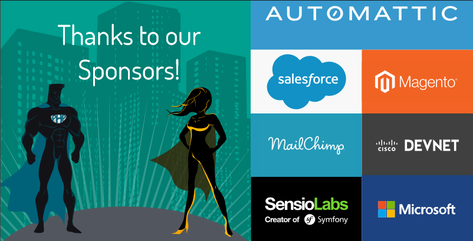

Delivering the Most Valuable Features
Emily


I'm a PHP developer
I've often worked directly with non-technical product owners and users
I workED at a University

Describe Features
features can do any of the following:
- add to the app
- change some functionality
- create an entirely different app

Discovery
Thank You!
Emily Stamey @elstamey